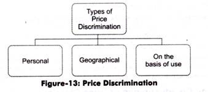

Price discrimination is a pricing strategy used by businesses to
charge different prices for the same product or service based
on various customer attributes or market conditions. The goal
of price discrimination is to maximize revenue by capturing the
highest possible price each customer segment is willing to pay.
or
In simple terms, price discrimination refers to a pricing
strategy where a seller charges different prices for the
same product or service to different customers or groups
of customers. The goal is to maximize profits by charging
higher prices to customers who are willing to pay more and
lower prices to those who are willing to pay less. This
strategy is based on the idea that different customers have
different levels of willingness to pay, and by adjusting prices
accordingly, businesses can increase their overall revenue.
There are three main types of price discrimination:
1. First-degree price discrimination (Perfect Price Discrimination):
In this scenario, the seller charges each customer the maximum price
they are willing to pay for the product or service. This means that
the seller knows the exact willingness to pay of each individual
customer and tailors the price accordingly. First-degree price
discrimination is rare in practice because it requires a deep
understanding of each customer's preferences and their maximum
willingness to pay.
2. Second-degree price discrimination: Here, the seller charges
different prices based on the quantity or volume of goods or services
purchased. This often takes the form of quantity discounts or bulk
pricing. For example, when you buy in larger quantities, you get a
lower price per unit.
3. Third-degree price discrimination: This is the most common
form of price discrimination and involves charging different
prices to different customer segments based on their
characteristics, such as age, location, income level,
or buying habits. Businesses often use demographic or
market data to identify different customer segments and
adjust their prices accordingly. For instance, students
may get discounted prices for certain products or services,
or airline companies may offer lower fares to senior citizens.

Price discrimination is often considered
more feasible for monopolists because they face little to no
competition, allowing them to wield greater control over pricing.
However, the extent to which a monopolist can successfully
engage in price discrimination depends on factors such as
market demand, the elasticity of demand in each segment,
and the ability to differentiate customers effectively.